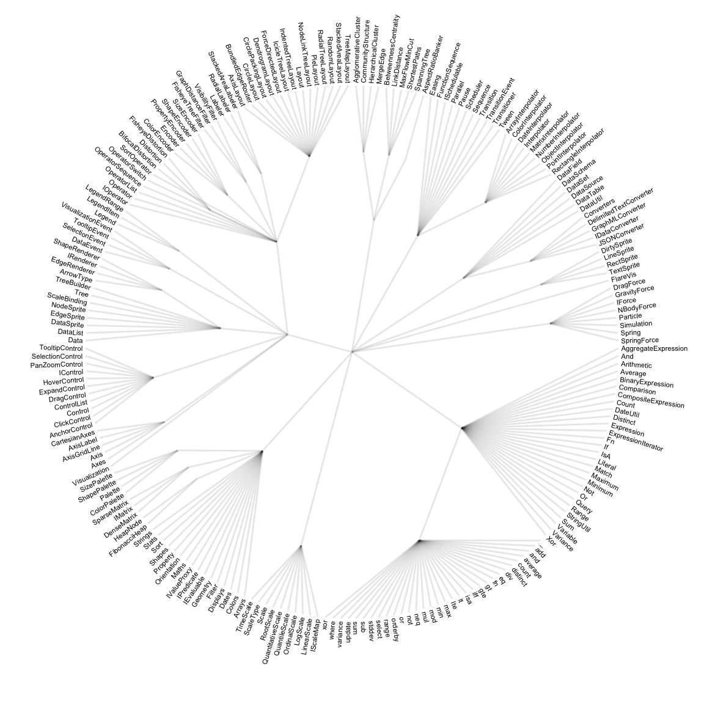
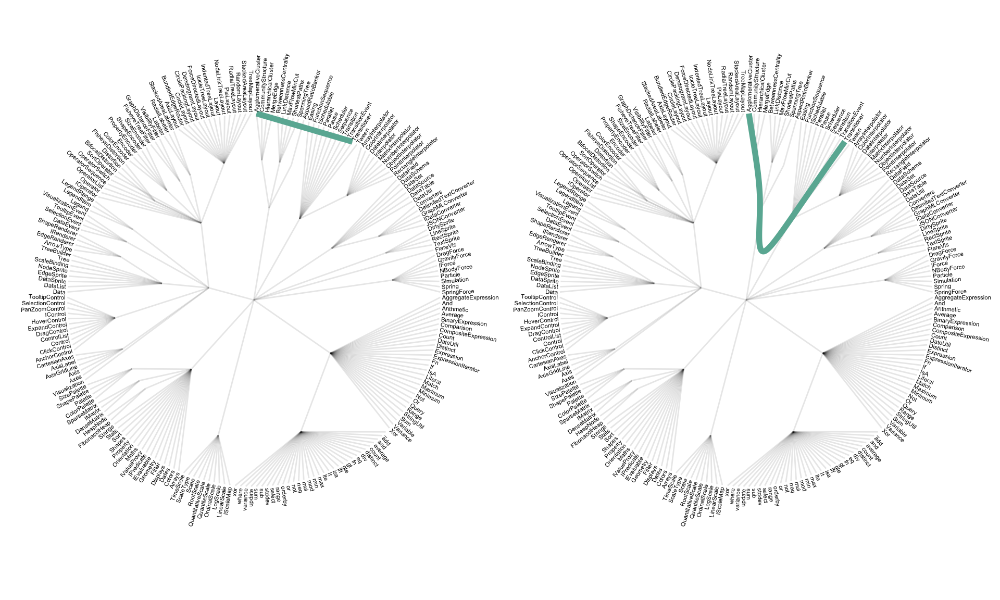
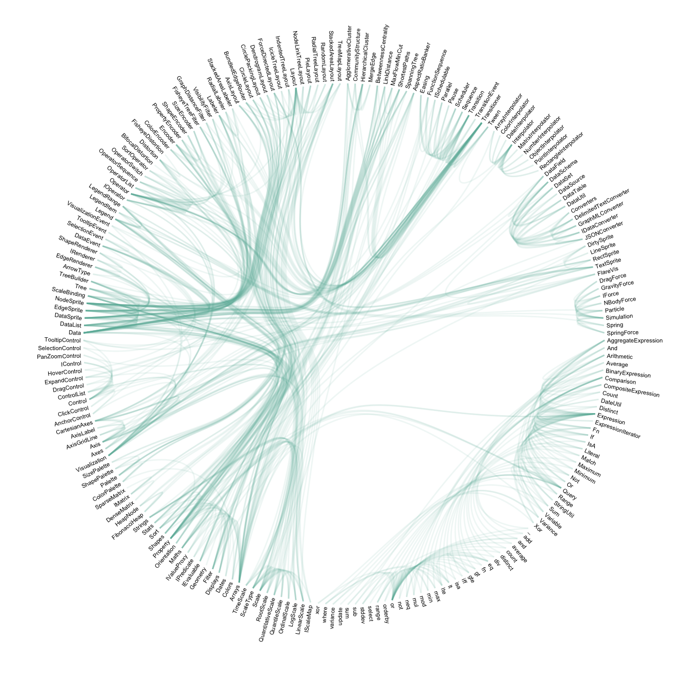

Hierarchical edge bundling
definition - mistake - related - code
Hierarchical Edge Bundling allows to visualize
adjacency relations between entities organized in a
hierarchy. The idea is to bundle the adjacency edges
together to decrease the clutter usually observed in complex
networks.
Step 1: Let’s consider the hierarchy of the Flare ActionScript visualization library. The elements of its library are organized in several folder, like query, data, scale… Each folder is then subdivided in subfolders and so on. The hierarchy can be visualized as a dendrogram as follow:
# Libraries
library(tidyverse)
library(viridis)
library(patchwork)
library(hrbrthemes)
library(ggraph)
library(igraph)
# The flare dataset is provided in ggraph
edges <- flare$edges
vertices <- flare$vertices %>% arrange(name) %>% mutate(name=factor(name, name))
connections <- flare$imports
# Preparation to draw labels properly:
vertices$id=NA
myleaves=which(is.na( match(vertices$name, edges$from) ))
nleaves=length(myleaves)
vertices$id[ myleaves ] = seq(1:nleaves)
vertices$angle= 90 - 360 * vertices$id / nleaves
vertices$hjust<-ifelse( vertices$angle < -90, 1, 0)
vertices$angle<-ifelse(vertices$angle < -90, vertices$angle+180, vertices$angle)
# Build a network object from this dataset:
mygraph <- graph_from_data_frame(edges, vertices = vertices)
# The connection object must refer to the ids of the leaves:
from = match( connections$from, vertices$name)
to = match( connections$to, vertices$name)
# Basic dendrogram
ggraph(mygraph, layout = 'dendrogram', circular = TRUE) +
geom_edge_link(size=0.4, alpha=0.1) +
geom_node_text(aes(x = x*1.01, y=y*1.01, filter = leaf, label=shortName, angle = angle, hjust=hjust), size=1.5, alpha=1) +
coord_fixed() +
theme_void() +
theme(
legend.position="none",
plot.margin=unit(c(0,0,0,0),"cm"),
) +
expand_limits(x = c(-1.2, 1.2), y = c(-1.2, 1.2))
Step 2: now consider another level of information. Some elements of the library have dependencies: basically they call other elements when they are used. A naive approach to represent this connection would be to draw a straight line (left). Instead, hierarchical edge bundling uses a curve that follows the hierarchy link between the 2 elements (right).
# Just one connection:
from_head = match( connections$from, vertices$name) %>% head(1)
to_head = match( connections$to, vertices$name) %>% head(1)
# Basic dendrogram
p1 <- ggraph(mygraph, layout = 'dendrogram', circular = TRUE) +
geom_edge_link(size=0.4, alpha=0.1) +
geom_conn_bundle(data = get_con(from = from_head, to = to_head), alpha = 1, colour="#69b3a2", width=2, tension=0) +
geom_node_text(aes(x = x*1.01, y=y*1.01, filter = leaf, label=shortName, angle = angle, hjust=hjust), size=1.5, alpha=1) +
coord_fixed() +
theme_void() +
theme(
legend.position="none",
plot.margin=unit(c(0,0,0,0),"cm"),
) +
expand_limits(x = c(-1.2, 1.2), y = c(-1.2, 1.2))
p2 <- ggraph(mygraph, layout = 'dendrogram', circular = TRUE) +
geom_edge_link(size=0.4, alpha=0.1) +
geom_conn_bundle(data = get_con(from = from_head, to = to_head), alpha = 1, colour="#69b3a2", width=2, tension=0.9) +
geom_node_text(aes(x = x*1.01, y=y*1.01, filter = leaf, label=shortName, angle = angle, hjust=hjust), size=1.5, alpha=1) +
coord_fixed() +
theme_void() +
theme(
legend.position="none",
plot.margin=unit(c(0,0,0,0),"cm"),
) +
expand_limits(x = c(-1.2, 1.2), y = c(-1.2, 1.2))
p1 + p2
Step 3: Hierarchical edge bundling apply this technique to every adjacency connection of the dataset. Also, it does not show the hierarchy of the dataset to decrease the clutter as much as possible. It results in a smooth eye catching figure where connection get obvious and the clutter minimal. Here is an analogy suggested by the inventor of this technique:
… as bundling your electrical wires together in order to reduce clutter, while fanning them out at their terminus in order to plus them in.
# Make the plot
ggraph(mygraph, layout = 'dendrogram', circular = TRUE) +
geom_conn_bundle(data = get_con(from = from, to = to), alpha = 0.1, colour="#69b3a2") +
geom_node_text(aes(x = x*1.01, y=y*1.01, filter = leaf, label=shortName, angle = angle, hjust=hjust), size=1.5, alpha=1) +
coord_fixed() +
theme_void() +
theme(
legend.position="none",
plot.margin=unit(c(0,0,0,0),"cm"),
) +
expand_limits(x = c(-1.2, 1.2), y = c(-1.2, 1.2))
Note: This example uses the famous flare
example provided in the ggraph
R library.
Reference: Hierarchical edge bundling is a method developped by: D. Holten 2006. Hierarchical Edge Bundles: Visualization of Adjacency Relations in Hierarchical Data. IEEE Transactions on Visualization and Computer Graphics 12(5).
Hierarchical edge bundling reduces visual clutter and also visualizes implicit adjacency edges between parent nodes that are the result of explicit adjacency edges between their respective child nodes. Furthermore, hierarchical edge bundling is a generic method which can be used in conjunction with existing tree visualization techniques.
Here is an example showing the same dataset with and without the use of bundling. The use of straight line on the left results in a cluttered figure that makes impossible to read the connection. The use of bundling on the right makes a neat figure:
source: Holten 2006.
Because I love this kind of graphic so much, I feel like displaying a few examples
Data To Viz is a comprehensive classification of chart types organized by data input format. Get a high-resolution version of our decision tree delivered to your inbox now!

A work by Yan Holtz for data-to-viz.com